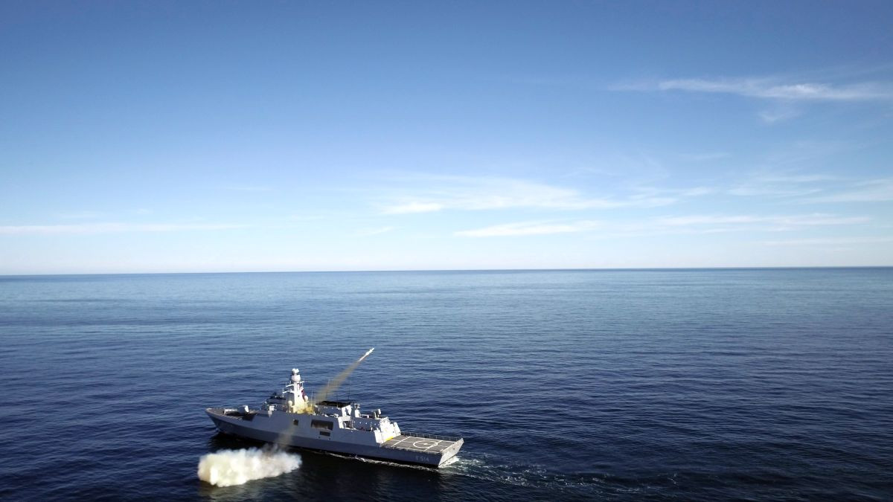
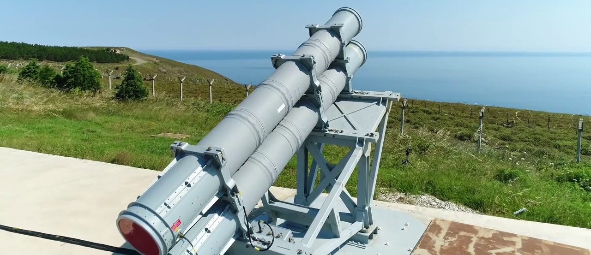

Genel Bilgi
ATMACA, suüstü harp ihtiyaçlarını karşılamak amacıyla geliştirilen, modern gemi savar füzedir. Hücumbot, korvet ve fırkateyn sınıfı platformlara entegre edilebilecek şekilde tasarlanmıştır.
Füze; uzun menzil, yüksek hassasiyet, düşük radar görünürlüğü ve her hava koşulunda görev yapabilme özellikleriyle modern deniz harp ortamında etkili bir çözüm sunar.
ATMACA ayrıca veri bağı üzerinden hedef güncelleme, yeniden saldırı ve görev iptali gibi esnek görev yönetimi yeteneklerine sahiptir. Bu da onu klasik gemi savar füzelerden daha esnek ve daha akıllı bir silah haline getirir.
Temel Özellikler
Menzil
55–250 km
Uzunluk
4.8 m
Çap
350 mm
Ağırlık
750 kg
Harp Başlığı
230 kg
Arayıcı
IIR
Detaylı Teknik Özellikler
| Füze Tipi | Gemi savar füze |
| Adı | ATMACA |
| Görev Alanı | Suüstü harp kapsamında satıh ve satıhüstü hedeflere karşı hassas angajman |
| Entegrasyon Platformları | Hücumbot, korvet, fırkateyn |
| Menzil | 55–250 km |
| Uzunluk | 4.8 m |
| Çap | 350 mm |
| Ağırlık | 750 kg |
| Arayıcı Başlık | IIR (görüntüleyici kızılötesi) |
| Güdüm | INS + GPS + barometrik altimetre + radar altimetre |
| Motor | Turbofan |
| Harp Başlığı Tipi | Yüksek patlayıcı parçacık etkili |
| Harp Başlığı Ağırlığı | 230 kg |
| Radar Görünürlüğü | Düşük radar kesit alanı / azaltılmış görünürlük |
| Görev Koşulları | Her hava koşulunda operasyon |
| Karşı Tedbir Dayanımı | Karşı tedbirlere dayanıklı |
| Öne Çıkan Özellik | Uzun menzilli, veri bağı destekli, düşük görünürlüklü yerli gemi savar füze |
Not: Resmî kaynaklarda ATMACA için “autonomous”, “long range”, “low radar cross section” ve
“high precision” gibi sistem nitelikleri ayrıca vurgulanmaktadır.
Görev ve Operasyonel Kabiliyetler
| Hedef Güncelleme | Veri bağı ile uçuş sırasında hedef güncelleme |
| Yeniden Saldırı | Re-attack / yeniden saldırı kabiliyeti |
| Görev İptali | Mission abort desteği |
| Görev Planlama | 3 boyutlu görev planlama |
| Zamanlama | ToT, DToT, SToT |
| Salvo Atış | Ripple / salvo fire |
| Hedefe Yaklaşım | Hedefe menzil kör noktasından yaklaşım profilleri |
| Görev Profilleri | Farklı görev profilleri ile esnek uçuş ve saldırı seçenekleri |
| Otonomi | Otonom görev icrası |
| Yüksek Hassasiyet | Terminal safhada yüksek hassasiyetli hedef angajmanı |
Hedef Seti
| Suüstü Gemileri | Korvet, fırkateyn, hücumbot ve diğer satıh hedefleri |
| Satıhüstü Hedefler | Deniz üzerindeki farklı platform ve unsurlar |
| Yüksek Öncelikli Deniz Hedefleri | Görev profiline göre seçilen stratejik veya taktik hedefler |
| Farklı Angajman Açılarındaki Hedefler | Kör nokta yaklaşımıyla hedefe farklı yönlerden saldırı |
Platform ve Kullanım Yapısı
| Deniz Platformları | Hücumbot, korvet ve fırkateyn sınıfı savaş gemileri |
| Kullanım Konsepti | Suüstü harp görevlerinde gemiden atılan anti-ship missile çözümü |
| Entegrasyon Yaklaşımı | Modern savaş gemilerine entegre çalışabilecek mimari |
| Aile Genişlemesi | ATMACA temel ailesi üzerinden farklı türev ve fırlatma konseptleri geliştirilmektedir |
Görseller


